Analog Signal Conditioning
Instrumentation 2.1
Imron Rosyadi
Learning Objectives
By the end of this session, you should be able to:
- Explain the role of analog signal conditioning in a measurement / control system.
- Describe and apply basic signal-level changes: biasing, amplification, attenuation.
- Explain loading using Thévenin models and compute its effect on measurements.
- Use voltage dividers and bridge circuits to convert resistance/impedance changes into voltages.
- Analyze RC filters (low-pass, high-pass, band-pass, notch) and design simple filters for noise reduction.
- Connect these concepts to real ECE applications: sensors, ADC interfaces, and industrial 4–20 mA loops.
Big Picture: Where Does Signal Conditioning Live?
Typical Instrumentation / Control Chain
- Physical quantity (temperature, pressure, light, force, …)
- Sensor / transducer → electrical signal (V, I, R, f)
- Analog signal conditioning
- Level & bias changes
- Linearization
- Conversions (R→V, V→I, etc.)
- Filtering & impedance matching
- ADC / digital logic / microcontroller
- Control algorithm / data logging
- Actuator / display / network interface
Note
Key idea: Signal conditioning makes the raw sensor signal usable by the next block in the chain.
1. What Is Analog Signal Conditioning?
- Operations on analog signals to convert them into a form suitable for:
- Other analog circuits (amplifiers, filters, actuators).
- ADC inputs in mixed‑signal systems.
- In this chapter, we focus on analog transformations (output still analog).
- Even if the final processing is digital, analog conditioning almost always happens first.
Real ECE examples:
- ECG front‑end: microvolt cardiac signals → 1–3 V, filtered, centered, then digitized.
- Strain gauge bridge on a load cell → mV → amplified / filtered → 4–20 mA transmitter.
- Light sensor (CdS cell) → resistance change → voltage via divider/bridge → linearized / scaled for an ADC.
2. Principles of Analog Signal Conditioning
2.1 Sensors & Transfer Functions
- A sensor / transducer converts a physical variable into an electrical quantity:
- Voltage, current, resistance, capacitance, inductance, or frequency.
- The relationship between input (physical) and output (electrical) is its transfer function.
Example:
- Cadmium sulfide (CdS) photoresistor:
- Resistance \(R_{\text{CdS}}\) varies nonlinearly and inversely with light intensity.
- We don’t get to choose this curve; nature chose it.
- A signal conditioning block also has a transfer function, e.g.
- Simple voltage amplifier: \(V_{\text{out}} = K V_{\text{in}}\) (gain \(K\)).
Important
When you design a measurement system, you are really designing the overall transfer function from physical variable → final electrical (or digital) output.
2.1 Signal-Level and Bias Changes
Scenario:
- Sensor output: \(0.2\ \text{V}\) to \(0.6\ \text{V}\) over measurement range.
- ADC or controller expects: \(0\) to \(5\ \text{V}\) for that same range.
Steps:
- Bias (zero shift): shift 0.2 V → 0 V.
- Subtract 0.2 V: \(V' = V_{\text{sensor}} - 0.2\ \text{V}\).
- Now \(V'\) ranges 0 to 0.4 V.
- Gain (amplification): scale 0–0.4 V → 0–5 V.
- Gain \(G = 5 / 0.4 = 12.5\).
- \(V_{\text{out}} = 12.5\,V'\).
If \(G > 1\) → amplification. If \(G < 1\) → attenuation (still called an amplifier circuit).
Design concerns:
- Frequency response: bandwidth must cover the signal spectrum.
- Input impedance: high enough not to load previous stage.
- Output impedance: low enough to drive next stage.
2.2 Linearization
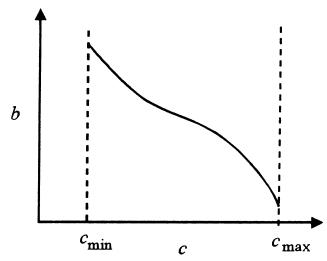
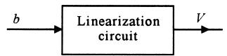
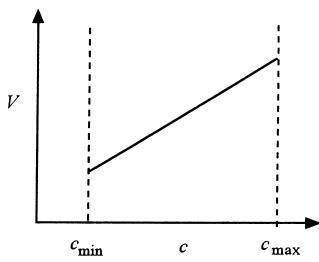
Figure 1: Linearization concept. (a) Nonlinear sensor output vs variable. (b) Block diagram of linearizer. (c) Resulting linear output vs variable.
- Many sensors are nonlinear: \(V_{\text{sensor}}(x)\) vs \(x\) is curved.
- But most ADCs / controllers assume a linear mapping between measured variable and digital value.
Two approaches:
- Old school (pure analog):
- Design nonlinear analog circuits (diodes, piecewise linear networks, log/antilog amplifiers) to reshape the curve.
- Works but is hard and limited to narrow ranges.
- Modern approach (mixed‑signal):
- Feed the nonlinear analog signal into an ADC.
- Use software to map it: table lookup, polynomial calibration, or interpolation.
- Can handle virtually any nonlinearity, in (near) real time.
ECE example: thermistor temperature sensor + microcontroller performing table‑based linearization.
2.3 Conversions (R→V, V→I, Analog→Digital)
Common conversion tasks in instrumentation:
- Resistance change → voltage
- Using voltage dividers or bridges (covered later).
- Voltage → current (V‑to‑I converter) for transmission.
- Current → voltage (I‑to‑V converter) at receiver.
- Analog → Digital (ADC input scaling).
4–20 mA current loop
- Industrial standard: transmit measurement as 4–20 mA current.
- Why current?
- Immune to series resistance: voltage drops along long cables don’t change current (much).
- 4 mA “live zero” distinguishes broken wire (0 mA).
Need:
- At transmitter: convert sensor R or V to 4–20 mA.
- At receiver: convert 4–20 mA to voltage, typically via a precision shunt resistor.
Analog to Digital Interface
- ADC input may require, e.g. 0–5 V, 0–3.3 V, ±2.5 V, etc.
- Sensor might yield 30–80 mV, or a resistance.
- Analog conditioning:
- Gain + offset + possibly filtering.
- Ensure sensor output fully uses ADC input range → better resolution.
2.4 Filtering and Impedance Matching
Filtering
- Real environments have noise:
- 50/60 Hz line interference.
- Motor start transients, switching spikes.
- High‑frequency EMI from radios, inverters, etc.
Use filters to:
- Pass desired band of frequencies.
- Reject low / high / narrow‑band noise.
Types (passive or active):
- Low-pass: pass low f, block high f (e.g., DC sensor + 60 Hz noise).
- High-pass: pass high f, block low f (e.g., remove DC offset / drift).
- Band-pass: pass midband (e.g., audio channel).
- Band-reject / notch: reject narrow band (e.g., 60 Hz notch).
Impedance Matching
- If sensor or line impedance is not matched to the receiving circuit:
- You get loading → amplitude errors.
- Possible reflections (at high frequency / transmission lines).
- Use passive or active networks to:
- Present high input impedance to the sensor.
- Provide low output impedance to whatever you drive.
2.5 Concept of Loading
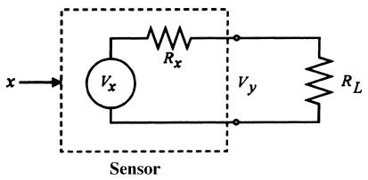
- Any two‑terminal source can be modeled (Thévenin) as:
- Ideal voltage source \(V_x\) in series with internal resistance \(R_x\).
- When open‑circuit (no load): output voltage = \(V_x\).
- When you connect a load \(R_L\):
- Current flows, some voltage drops across \(R_x\).
- Loaded output voltage:
\[ V_y = V_x\left(1 - \frac{R_x}{R_L + R_x}\right) \]
- If \(R_L\) is not >> \(R_x\), \(V_y\) is significantly < \(V_x\).
Goal in measurement systems: make \(R_L \gg R_x\) to minimize loading.
Warning
Loading changes the apparent transfer function of your sensor + conditioning block. If your measurement depends on amplitude, loading matters a lot.
Example 1 — Loading Between Sensor and Amplifier
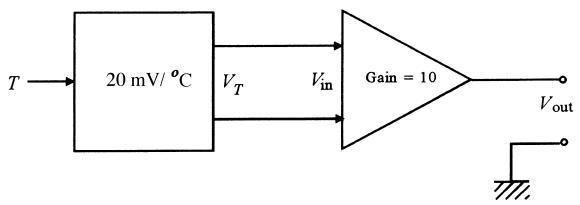
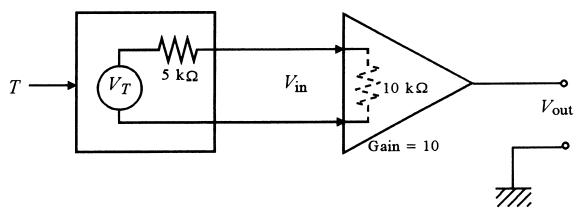
Figure 3: (a) Naive model ignoring loading. (b) Correct model including sensor output resistance and amplifier input resistance.Given:
- Amplifier gain \(= 10\), input resistance \(R_L = 10\ \text{k}\Omega\).
- Sensor transfer function: \(20\ \text{mV}/^\circ\text{C}\), output resistance \(R_x = 5.0\ \text{k}\Omega\).
- Temperature \(T = 50^\circ\text{C}\).
Naive (no loading) answer:
- Sensor open‑circuit: \(V_T = (20\ \text{mV}/^\circ\text{C})(50^\circ\text{C}) = 1.0\ \text{V}\).
- Amplifier output: \(V_{\text{out}} = 10\cdot 1.0\ \text{V} = 10\ \text{V}\).
Correct answer (include loading):
- Sensor and amplifier form a divider:
\[ V_{\text{in}} = V_T\left(1 - \frac{R_x}{R_x + R_L}\right) = 1.0\text{ V}\left(1 - \frac{5.0\text{ k}\Omega}{5.0\text{ k}\Omega + 10\text{ k}\Omega}\right) \]
- Numerically: \(V_{\text{in}} \approx 0.67\ \text{V}\).
- Amplifier output: \(V_{\text{out}} = 10 \cdot 0.67\ \text{V} = 6.7\ \text{V}\).
Error from ignoring loading: \(10\ \text{V}\) vs \(6.7\ \text{V}\) → 33% error.
3. Passive Circuits in Signal Conditioning
- Two essential passive building blocks:
- Voltage dividers.
- Bridge circuits (Wheatstone, AC bridges).
- RC networks used for filtering.
Even though op‑amps are cheap, passive circuits still matter:
- High accuracy (e.g., precision bridges).
- Simple, low‑power, and often very low noise.
3.1 Voltage Divider Circuits
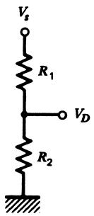
- Two resistors, \(R_1\) and \(R_2\), in series across supply \(V_s\).
- Output is taken across \(R_2\).
Divider equation:
\[ V_D = \frac{R_2}{R_1 + R_2} V_s \tag{2} \]
Often, either \(R_1\) or \(R_2\) is the sensor whose resistance varies with the measured variable.
Issues to consider:
- Nonlinearity:
- Even if sensor resistance varies linearly with variable, \(V_D\) vs variable is nonlinear (rational function).
- Output impedance:
- \(Z_{\text{out}} = R_1 \parallel R_2\).
- Might not be high enough → loading by next stage.
- Power dissipation:
- Current through divider: \(I = V_s / (R_1 + R_2)\).
- Both resistors dissipate \(P = I^2R\); sensor must not be overheated.
Example 2 — Divider with Variable Sensor Resistance
Given (Figure 4):
- \(R_1 = 10.0\ \text{k}\Omega\), \(V_s = 5.00\ \text{V}\).
- \(R_2\) is a sensor varying from \(4.00\ \text{k}\Omega\) to \(12.0\ \text{k}\Omega\).
(a) Range of \(V_D\)
Use Equation (2).
For \(R_2 = 4\ \text{k}\Omega\):
\[ V_D = \frac{(5\ \text{V})(4\ \text{k}\Omega)}{10\ \text{k}\Omega + 4\ \text{k}\Omega} = 1.43\ \text{V} \]
For \(R_2 = 12\ \text{k}\Omega\):
\[ V_D = \frac{(5\ \text{V})(12\ \text{k}\Omega)}{10\ \text{k}\Omega + 12\ \text{k}\Omega} = 2.73\ \text{V} \]
So \(V_D\) ranges from 1.43 V to 2.73 V.
(b) Output impedance range
\(Z_{\text{out}} = R_1 \parallel R_2\).
- For \(R_2 = 4\ \text{k}\Omega\): \(Z_{\text{out}} = 2.86\ \text{k}\Omega\).
- For \(R_2 = 12\ \text{k}\Omega\): \(Z_{\text{out}} = 5.45\ \text{k}\Omega\).
(c) Power dissipated in \(R_2\)
Use \(P = V_D^2 / R_2\):
- At 4 kΩ: \(P \approx 0.51\ \text{mW}\).
- At 12 kΩ: \(P \approx 0.62\ \text{mW}\).
3.2 Wheatstone Bridge Circuits
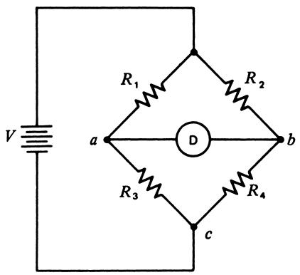
- Purpose: convert small resistance changes into measurable voltage changes.
- Very commonly used with:
- Strain gauges, RTDs, pressure sensors, etc.
- Arrangement: four resistors in a diamond, excited by a voltage \(V\).
- Detector \(D\) senses voltage difference between points \(a\) and \(b\).
Define:
- \(V_a =\) potential at node \(a\) w.r.t. node \(c\).
- \(V_b =\) potential at node \(b\) w.r.t. node \(c\).
- Offset: \(\Delta V = V_a - V_b\).
Assuming infinite detector impedance (no current through D):
\[ V_a = \frac{V R_3}{R_1 + R_3} \tag{4} \]
\[ V_b = \frac{V R_4}{R_2 + R_4} \tag{5} \]
So
\[ \Delta V = V_a - V_b = V\frac{R_3R_2 - R_1R_4}{(R_1 + R_3)(R_2 + R_4)} \tag{7} \]
Null (balanced bridge):
- When \(\Delta V = 0\), condition is:
\[ R_3 R_2 = R_1 R_4 \tag{8} \]
Key advantage: null condition is independent of supply voltage \(V\).
Example 3 — Finding an Unknown Resistance from Bridge Null
Given:
- Bridge nulls (ΔV = 0) with \(R_1 = 1000\ \Omega\), \(R_2 = 842\ \Omega\), \(R_3 = 500\ \Omega\).
- Find \(R_4\).
Use Equation (8):
\[ R_1 R_4 = R_3 R_2 \Rightarrow R_4 = \frac{R_3R_2}{R_1} = \frac{(500\ \Omega)(842\ \Omega)}{1000\ \Omega} = 421\ \Omega \]
So the unknown resistance is 421 Ω.
Example 4 — Small Offset from Nearly Balanced Bridge
Given:
- \(R_1 = R_2 = R_3 = 120\ \Omega\), \(R_4 = 121\ \Omega\), \(V = 10.0\ \text{V}\).
- Find voltage offset ΔV.
Using Equation (7):
\[ \Delta V = 10\ \text{V}\cdot \frac{(120\ \Omega)(120\ \Omega) - (120\ \Omega)(121\ \Omega)} {(120\ \Omega + 120\ \Omega)(120\ \Omega + 121\ \Omega)} \]
Result:
\[ \Delta V = -20.7\ \text{mV} \]
Negative sign → \(V_b > V_a\).
Bridges with Galvanometer Detectors (Finite Detector Resistance)
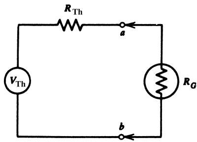
If the detector is a galvanometer or any finite resistance \(R_G\):
- We replace bridge (between nodes \(a\) and \(b\)) by its Thévenin equivalent:
- Thévenin voltage \(V_{\text{Th}}\) (open‑circuit ΔV).
- Thévenin resistance \(R_{\text{Th}}\).
From earlier:
\[ V_{\text{Th}} = V\frac{R_3R_2 - R_1R_4}{(R_1 + R_3)(R_2 + R_4)} \tag{9} \]
Thévenin resistance between \(a\) and \(b\):
\[ R_{\text{Th}} = \frac{R_1R_3}{R_1 + R_3} + \frac{R_2R_4}{R_2 + R_4} \tag{10} \]
Detector current:
\[ I_G = \frac{V_{\text{Th}}}{R_{\text{Th}} + R_G} \tag{11} \]
Bridge null condition is still Equation (8).
Example 5 — Offset Current with Galvanometer
Given:
- Bridge: \(R_1 = R_2 = R_3 = 2.00\ \text{k}\Omega\), \(R_4 = 2.05\ \text{k}\Omega\), \(V = 5.00\ \text{V}\).
- Galvanometer internal resistance \(R_G = 50.0\ \Omega\).
- Find offset current \(I_G\).
Find \(V_{\text{Th}}\) from Equation (9):
\(V_{\text{Th}} = -30.9\ \text{mV}\).
Find \(R_{\text{Th}}\) from Equation (10):
\(R_{\text{Th}} \approx 2.01\ \text{k}\Omega\).
Detector current (Equation 11):
\[ I_G = \frac{-30.9\ \text{mV}}{2.01\ \text{k}\Omega + 50\ \Omega} \approx -15.0\ \mu\text{A} \]
Negative → current flows from \(b\) to \(a\).
Bridge Resolution
- Detector resolution (minimum measurable ΔV or ΔI) translates to minimum detectable resistance change in the bridge.
- For high‑input‑impedance detector (e.g., DVM): use Equation (7) or (6) and solve for \(\Delta R\) such that \(\Delta V\) equals detector resolution.
Example 6 — Smallest Measurable Resistance Change
Given:
- Bridge: \(R_1 = R_2 = R_3 = R_4 = 120.0\ \Omega\), \(V = 10.0\ \text{V}\).
- Detector: 3½‑digit DVM on 200 mV range → resolution = \(0.1\ \text{mV} = 100\ \mu\text{V}\).
- Find resolution (smallest \(\Delta R_4\)) for measurement of \(R_4\).
Approach:
- Bridge is initially nulled (ΔV = 0) when all resistors are 120 Ω.
- Now assume \(R_4\) changes to some value giving ΔV = 100 μV.
- Use Equation (6) with unknown \(R_4\) and solve.
Result:
- \(R_4 = 119.9952\ \Omega\).
- \(\Delta R_4 = 120.0000 - 119.9952 = 0.0048\ \Omega\).
So resolution: about \(4.8\ \text{m}\Omega\).
Tip
Resolution here also tells you the measurement uncertainty (best‑case) using this bridge and detector.
Lead Compensation in Bridges
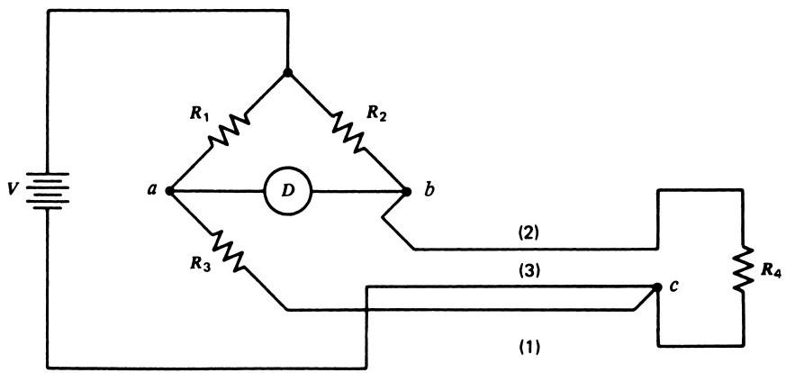
When sensor \(R_4\) is remotely located, long wires add resistance and can vary with:
- Temperature.
- Mechanical stress.
- Corrosion / chemical vapors.
Lead compensation idea:
- Route the wiring so that lead resistance changes are mirrored in two arms (\(R_3\) and \(R_4\)) of the bridge.
- If both arms change by same amount, condition \(R_3R_2 = R_1R_4\) still holds → no change in ΔV.
ECE analogy: 3‑wire RTD configuration widely used in industrial temperature measurement.
Current-Balance Bridge
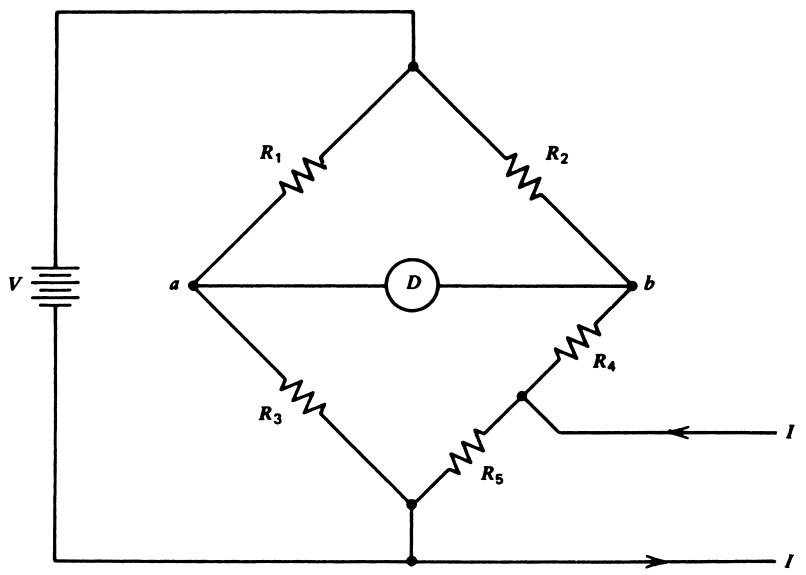
Motivation:
- Mechanical feedback (motors adjusting resistors) is slow and noisy.
- Better to electronically null the bridge using a current source.
Construction:
- Split one arm into \(R_4\) and \(R_5\).
- Inject current \(I\) at their junction (into \(R_5\) mostly).
Under conditions \(R_4 \gg R_5\) or \((R_2 + R_4) \gg R_5\):
- Voltage at \(b\):
\[ V_b = \frac{V(R_4 + R_5)}{R_2 + R_4 + R_5} + I R_5 \tag{14} \]
- Voltage at \(a\): still Equation (4).
- Bridge offset:
\[ \Delta V = V_a - V_b = \frac{V R_3}{R_1 + R_3} - \frac{V(R_4 + R_5)}{R_2 + R_4 + R_5} - I R_5 \tag{15} \]
To null the bridge: adjust \(I\) so that \(\Delta V = 0\).
Example 7 — Current Required to Renull a Current-Balance Bridge
Given (Figure 8):
- \(R_1 = R_2 = 10\ \text{k}\Omega\), \(R_3 = 1\ \text{k}\Omega\), \(R_4 = 950\ \Omega\), \(R_5 = 50\ \Omega\).
- High‑impedance detector, supply \(V = 10\ \text{V}\).
- Initially, with \(R_3 = 1000\ \Omega\), bridge is nulled at \(I = 0\).
- Now \(R_3\) increases by 1 Ω to 1001 Ω. Find \(I\) required to renull.
Steps:
Compute \(V_a\) with new \(R_3\):
\(V_a = \dfrac{10\ \text{V}\cdot 1001}{10000 + 1001} = 0.9099\ \text{V}\).
Originally (with \(I = 0\)), \(V_a = V_b = 0.9091\ \text{V}\).
- So now \(V_b\) must also be 0.9099 V to null.
- Required increase: \(0.8\ \text{mV}\).
Using Equation (15) with \(\Delta V = 0\) and only \(IR_5\) as adjustable term:
\(IR_5 = 0.8\ \text{mV} \Rightarrow I = 0.8\ \text{mV} / 50\ \Omega = 16\ \mu\text{A}\).
Bridges for Potential Measurements
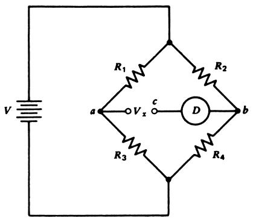
- Place unknown voltage \(V_x\) in series with the detector between \(c\) and \(b\).
- Detector measures \(\Delta V = V_c - V_b\).
- At null (\(\Delta V = 0\)): no current flows through \(V_x\).
For conventional bridge:
- \(V_c = V_x + V_a\), and \(V_b\) from Equation (5).
- Null condition:
\[ V_x + \frac{R_3 V}{R_1 + R_3} - \frac{V R_4}{R_2 + R_4} = 0 \tag{17} \]
So \(V_x\) can be found by choosing resistors to null the detector.
Example 8 — Measuring an Unknown Potential with a Bridge
Given:
- \(R_1 = R_2 = 1\ \text{k}\Omega\), \(R_3 = 605\ \Omega\), \(R_4 = 500\ \Omega\), \(V = 10\ \text{V}\).
- Bridge nulls when unknown potential \(V_x\) is inserted as in Figure 9.
- Find \(V_x\).
Using Equation (17):
\[ V_x + \frac{605\cdot 10}{605 + 1000} - \frac{500\cdot 10}{1000 + 500} = 0 \]
Compute:
- \(\frac{605\cdot 10}{1605} \approx 3.769\ \text{V}\).
- \(\frac{500\cdot 10}{1500} = 3.333\ \text{V}\).
So
\[ V_x + 3.769 - 3.333 = 0 \Rightarrow V_x = -0.436\ \text{V} \]
Negative sign → polarity opposite to assumed orientation.
Example 9 — Potential Measurement with Current Balance Bridge
For current‑balance configuration (Figure 8) with \(V_x\) in series with detector:
- Null condition (Equation 18):
\[ V_x + \frac{R_3 V}{R_1 + R_3} - \frac{V(R_4 + R_5)}{R_2 + R_4 + R_5} - I R_5 = 0 \tag{18} \]
If fixed resistors are chosen so that bridge nulls with \(I = 0\), \(V_x = 0\), middle terms cancel:
\[ V_x - I R_5 = 0 \tag{19} \]
Given:
- \(R_1 = R_2 = 5\ \text{k}\Omega\), \(R_3 = 1\ \text{k}\Omega\), \(R_4 = 990\ \Omega\), \(R_5 = 10\ \Omega\), \(V = 10\ \text{V}\).
- For \(V_x = 12\ \text{mV}\), find \(I\) to null.
From Equation (19):
\[ 12\ \text{mV} - 10 I = 0 \Rightarrow I = 1.2\ \text{mA} \]
AC Bridges
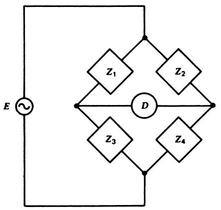
- Same idea as DC bridge, but impedances \(Z_1, Z_2, Z_3, Z_4\) and AC excitation \(E\).
- Offset (phasor) voltage:
\[ \Delta E = E\frac{Z_3Z_2 - Z_1Z_4}{(Z_1 + Z_3)(Z_2 + Z_4)} \tag{20} \]
- Null condition:
\[ Z_3 Z_2 = Z_1 Z_4 \tag{21} \]
Special note: if the detector is phase sensitive, both in‑phase and quadrature components must be nulled.
Example 10 — Finding Unknown R and C from an AC Bridge
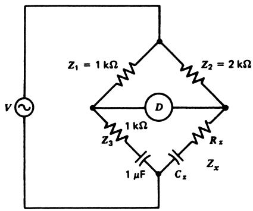
Assume:
- \(Z_1 = R_1\), \(Z_2 = R_2\), \(Z_3 = R_3 - j/\omega C\), \(Z_x = R_x - j/(\omega C_x)\).
At null: \(Z_2 Z_3 = Z_1 Z_x\).
Real and imaginary parts must match:
- From real part:
\[ R_x = \frac{R_2 R_3}{R_1} \]
- From imaginary part:
\[ C_x = C\frac{R_1}{R_2} \]
With numbers given in the original text:
- \(R_x = 2\ \text{k}\Omega\).
- \(C_x = 0.5\ \mu\text{F}\).
Nonlinearity of Bridge Response
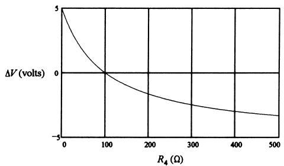
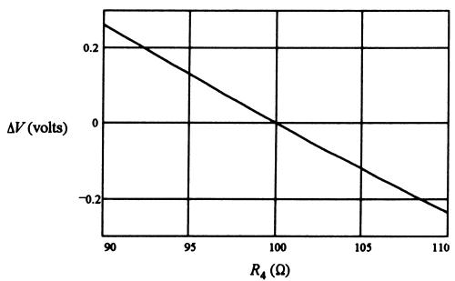
- Equation (7) is nonlinear in any resistor.
- If sensor resistance varies over a wide range, bridge voltage vs resistance is significantly curved (Figure 12a).
- If resistance variation is small and centered on the null (e.g., 90–110 Ω around 100 Ω):
- The curve is almost linear over that small range (Figure 12b).
- We can amplify the small off‑null voltage to expand the scale.
Design tip: operate bridges close to null and limit sensor range to maintain approximate linearity, then do software calibration if needed.
3.3 RC Filters — Basics
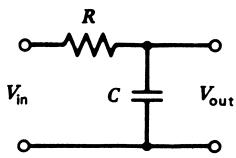
Simple first‑order filters built from one R and one C:
- Low-pass (Figure 13): passes DC/low frequencies, attenuates high frequencies.
- High-pass (Figure 15): passes high frequencies, attenuates low frequencies.
Critical / cutoff frequency:
\[ f_c = \frac{1}{2\pi RC} \tag{22} \]
At \(f = f_c\):
- \(|V_{\text{out}}/V_{\text{in}}| = 1/\sqrt{2} \approx 0.707\) → −3 dB point.
Low-Pass RC Filter
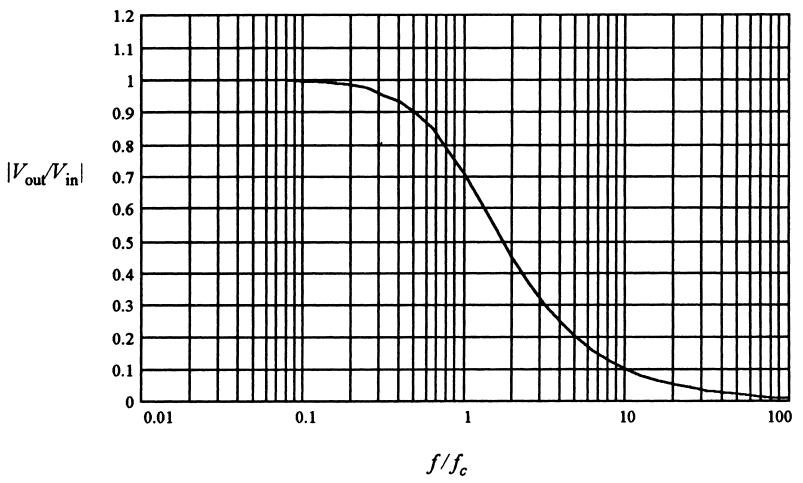
Transfer magnitude:
\[ \left| \frac{V_{\text{out}}}{V_{\text{in}}} \right| = \frac{1}{\sqrt{1 + (f/f_c)^2}} \tag{23} \]
Applications:
- Measure DC or slowly varying signals while rejecting high‑frequency noise.
- Anti‑aliasing before an ADC (though often higher‑order filters are used).
Design Guidelines
- Choose a capacitor in the μF–pF range.
- Compute \(R\) from \(R = 1/(2\pi f_c C)\).
- Aim for \(1\ \text{k}\Omega \le R \le 1\ \text{M}\Omega\) to avoid excessive current or noise.
- Component tolerances (e.g., ±20% for capacitors) mean \(f_c\) is approximate.
- If precise \(f_c\) is needed, measure \(C\) and use a trim pot for \(R\).
Example 11 — Low-Pass Filter for 1 MHz Noise
Goal:
- Measurement signal frequencies < 1 kHz.
- Unwanted noise around 1 MHz.
- Want noise at 1 MHz attenuated to 1% (\(|V_{\text{out}}/V_{\text{in}}| = 0.01\)).
- What is effect on desired 1 kHz signal?
Use Equation (23):
Set \(f = 1\ \text{MHz}\), \(|V_{\text{out}}/V_{\text{in}}| = 0.01\):
\[ 0.01 = \frac{1}{\sqrt{1 + (10^6/f_c)^2}} \Rightarrow (10^6/f_c)^2 \approx 9999 \]
So \(f_c \approx 10\ \text{kHz}\).
Pick \(C = 0.01\ \mu\text{F}\) ⇒
\[ R = \frac{1}{2\pi f_c C} \approx 1591\ \Omega \]
Use standard \(R = 1.5\ \text{k}\Omega\) ⇒ actual \(f_c \approx 10.6\ \text{kHz}\).
Noise attenuation at 1 MHz: very close to 0.01 (slightly better).
Effect on 1 kHz signal:
\[ \left| \frac{V_{\text{out}}}{V_{\text{in}}} \right| = \frac{1}{\sqrt{1 + (1000/10610)^2}} \approx 0.996 \]
Only about 0.4% loss in the desired band.
High-Pass RC Filter
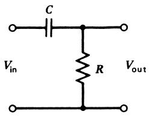
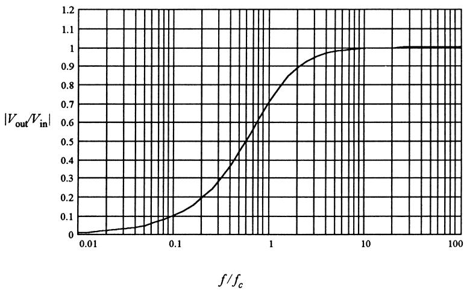
Transfer magnitude:
\[ \left| \frac{V_{\text{out}}}{V_{\text{in}}} \right| = \frac{f/f_c}{\sqrt{1 + (f/f_c)^2}} \tag{24} \]
At \(f = f_c\) → \(|V_{\text{out}}/V_{\text{in}}| = 0.707\) (−3 dB).
Applications:
- Remove DC offsets or low‑frequency drift from signals.
- AC‑coupled amplifiers; pulse transmission.
Example 12 — High-Pass Filter for 60 Hz Noise
Goal:
- Pulses for a stepper motor at 2000 Hz.
- 60 Hz noise present.
- Want to reduce 60 Hz noise strongly, but allow pulse amplitude to be reduced by no more than 3 dB (≈0.707).
Since 3 dB corresponds to \(|V_{\text{out}}/V_{\text{in}}| = 0.707\), we choose:
- \(f_c = 2000\ \text{Hz}\).
Now effect on 60 Hz:
\[ \left| \frac{V_{\text{out}}}{V_{\text{in}}} \right| = \frac{60/2000}{\sqrt{1 + (60/2000)^2}} \approx 0.03 \]
So 60 Hz noise is reduced to about 3% (97% attenuation).
Design: pick \(C = 0.01\ \mu\text{F}\) →
\[ R = \frac{1}{2\pi f_c C} \approx 7.96\ \text{k}\Omega \]
Choose standard 7.5 kΩ or 8.2 kΩ as close approximations.
Practical Considerations for RC Filters
- Component range:
- Avoid too small \(R\) (large currents, loading).
- Avoid very large \(C\) (size, leakage).
- Loading:
- Finite source impedance + filter input impedance.
- Filter output impedance + load impedance.
- May need buffer stages (op‑amp followers) to avoid loading.
- Cascading filters:
- Magnitudes multiply.
- Overall transfer = (first‑order response)^N for N cascaded sections (if no loading).
- Be careful: second stage can load first stage → more attenuation than expected.
Example 13 — 1 vs 2 High-Pass Stages
Goal:
- 2 kHz data signal contaminated by 60 Hz noise.
- Want 60 dB attenuation of 60 Hz (\(|V_{\text{out}}/V_{\text{in}}| = 10^{-3}\)).
Single-stage high-pass
Use Equation (24):
\[ 0.001 = \frac{60/f_c}{\sqrt{1 + (60/f_c)^2}} \]
Solve → \(f_c \approx 60\ \text{kHz}\).
Effect on 2 kHz data:
\[ \left|\frac{V_{\text{out}}}{V_{\text{in}}}\right| = \frac{2000/60000}{\sqrt{1 + (2000/60000)^2}} \approx 0.033 \]
Only 3.3% of data amplitude remains → too much attenuation.
Two cascaded stages (same \(f_c\))
- Overall response ≈ (Equation 24)\(^2\).
- For same 60 dB attenuation of 60 Hz noise, solve:
\[ 0.001 = \frac{(60/f_c)^2}{1 + (60/f_c)^2} \]
→ \(f_c \approx 1896\ \text{Hz}\).
Now effect on 2 kHz signal (using squared response):
\[ \left|\frac{V_{\text{out}}}{V_{\text{in}}}\right| = \frac{(2000/1896)^2}{1 + (2000/1896)^2} \approx 0.53 \]
So about 53% of signal remains, much better than 3.3%.
Example 14 — Loading Between Cascaded RC Stages
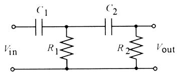
We now consider loading for Example 13 with specific component choices.
Given:
- First stage: choose \(C = 0.001\ \mu\text{F}\); need \(f_c = 1896\ \text{Hz}\).
- From \(f_c = 1/(2\pi RC)\):
\[ R = \frac{1}{2\pi f_c C} \approx 83.9\ \text{k}\Omega \]
- Second stage uses same \(R\) and \(C\).
- Evaluate loading effect at \(f = 2\ \text{kHz}\).
Key steps:
- Compute capacitor reactance at 2 kHz: \(X_C \approx 79.6\ \text{k}\Omega\).
- Find equivalent impedances and Thévenin equivalent of first stage.
- Use AC divider to find effective input to second stage.
Result:
- Without loading, two‑stage response at 2 kHz was \(\approx 0.53\).
- With loading, actual overall response ≈ 0.36.
So loading reduces signal to 36% instead of 53%.
Still better than 3.3% from single stage, but emphasizes: - Need for buffers between stages when precision matters.
Band-Pass RC Filters
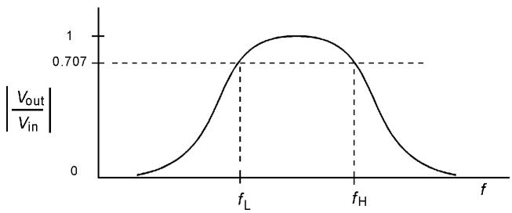
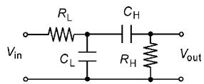
- Constructed by cascading a high-pass and a low-pass filter.
- Lower critical frequency \(f_L\) from high-pass; upper critical frequency \(f_H\) from low-pass.
- Passband is \(f_L < f < f_H\).
For the RC band‑pass in Figure 20 (including loading via ratio \(r = R_H / R_L\)):
\[ \left|\frac{V_{\text{out}}}{V_{\text{in}}}\right| = \frac{f_H f} {\sqrt{(f^2 - f_H f_L)^2 + [f_L + (1 + r)f_H]^2 f^2}} \tag{25} \]
with
\[ f_H = \frac{1}{2\pi R_L C_L}, \quad f_L = \frac{1}{2\pi R_H C_H} \tag{26} \]
Design tips:
- Want wide separation between \(f_L\) and \(f_H\).
- Keep \(r = R_H / R_L \le 0.01\) to minimize loading effects.
Example 15 — Band-Pass for 6–60 kHz Data
Goal:
- Signal frequencies: 6 kHz to 60 kHz.
- Noise at 120 Hz and 1 MHz.
- Design RC band‑pass to reduce noise by 90% (|Vout/Vin| = 0.1).
Lower cutoff (high-pass part)
At 120 Hz, want |Vout/Vin| ≈ 0.1:
Use Equation (24):
\[ 0.1 = \frac{120/f_L}{\sqrt{1 + (120/f_L)^2}} \Rightarrow f_L \approx 1200\ \text{Hz} \]
Upper cutoff (low-pass part)
At 1 MHz, want |Vout/Vin| ≈ 0.1:
Use Equation (23):
\[ 0.1 = \frac{1}{\sqrt{1 + (10^6/f_H)^2}} \Rightarrow f_H \approx 100\ \text{kHz} \]
Plot of Equation (25) (Figure 21 in text) shows:
- For \(r = 0.1\) vs \(r = 0.01\), loaded passband is lower in amplitude for larger \(r\).
Design with \(r = 0.01\):
- Choose \(R_L = 100\ \text{k}\Omega\), then \(R_H = rR_L = 1\ \text{k}\Omega\).
- From Equation (26):
- \(C_H = 0.133\ \mu\text{F}\).
- \(C_L = 15.9\ \text{pF}\).
Effect on data:
- At 6 kHz: |Vout/Vin| ≈ 0.969 (3% reduction).
- At 60 kHz: |Vout/Vin| ≈ 0.851 (15% reduction).
Band-Reject (Notch) Filters
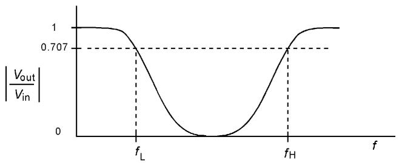
- Reject a range of frequencies (especially a narrow band).
- Useful when one particular frequency interferes, e.g., 50/60 Hz hum in audio or ECG.
Passive RC implementation with good performance is hard; inductive or active filters usually better.
Twin-T Notch Filter
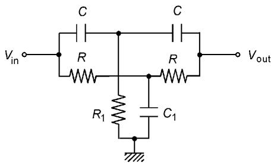
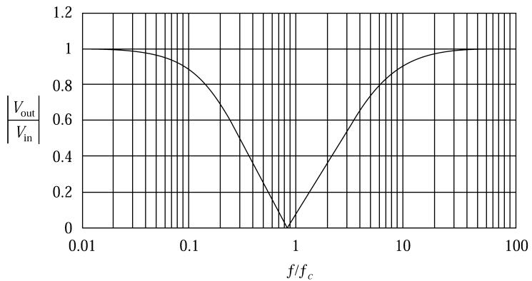
Configuration:
- Top T: series–parallel of R and C.
- Bottom T: R and C interchanged.
- Grounding components \(R_1\) and \(C_1\) tune the notch.
For \(R_1 = \frac{\pi R}{10}\) and \(C_1 = \frac{10C}{\pi}\):
- Critical frequency:
\[ f_n = 0.785 f_c, \quad \text{where } f_c = \frac{1}{2\pi RC} \tag{27} \]
- Frequencies for −3 dB (0.707):
\[ f_L = 0.187 f_c, \quad f_H = 4.57 f_c \tag{28} \]
At \(f_n\), |Vout/Vin| ≈ 0.002 ⇒ good but not perfect rejection.
Example 16 — 400 Hz Notch Filter (Twin-T)
Goal:
- On an aircraft, 400 Hz is the power frequency.
- Want to reject 400 Hz.
- Evaluate effect on voice band (10–300 Hz) and find upper −3 dB frequency.
We want \(f_n = 400\ \text{Hz}\). From Equation (27):
\[ 400 = 0.785 f_c \Rightarrow f_c \approx 510\ \text{Hz} \]
Pick \(C = 0.01\ \mu\text{F}\) →
\[ R = \frac{1}{2\pi f_c C} \approx 31.2\ \text{k}\Omega \]
Grounding components:
\[ R_1 = \frac{\pi R}{10} \approx 9800\ \Omega \]
\[ C_1 = \frac{10C}{\pi} \approx 0.0318\ \mu\text{F} \]
Effect on voice band:
- At 10 Hz: \(10/400 = 0.025\) → from Figure 24, |Vout/Vin| ≈ 0.99 (little attenuation).
- At 300 Hz: \(300/400 = 0.75\) → |Vout/Vin| ≈ 0.03 (significant attenuation).
Upper −3 dB frequency:
- From Equation (28): \(f_H = 4.57 f_c ≈ 2300\ \text{Hz}\).
So: - Very good rejection at 400 Hz. - Low voice frequencies largely unaffected, higher low frequencies more attenuated.
Summary / Key Points
- Signal conditioning bridges the gap between raw sensor outputs and the requirements of downstream electronics (amplifiers, ADCs, transmitters).
- Key tasks:
- Signal-level & bias changes: match sensor outputs to required voltage ranges.
- Linearization: historically analog, now often done in software.
- Conversions: R→V, V↔︎I, analog→digital interface.
- Filtering: low-pass, high-pass, band-pass, band-reject/notch.
- Impedance matching & loading mitigation: maintain accuracy.
- Loading:
- Real sources have internal resistance.
- When load is not ≫ source resistance, measured voltage drops (Thévenin model).
- Passive circuits:
- Voltage dividers: simple R→V conversion but nonlinear, have finite output impedance, dissipate power.
- Wheatstone bridges: highly sensitive resistance measurement and R→V conversion; null condition independent of supply.
- AC bridges: extend bridges to impedances (R, C, L), account for magnitude and phase.
- RC filters:
- First‑order low-pass and high-pass with cutoff \(f_c = 1/(2\pi RC)\).
- Easy to design but limited slope (−20 dB/decade).
- Cascading increases slope but requires attention to loading.
- Band-pass = high-pass + low-pass; band-reject (notch) can be implemented with twin‑T for narrow band rejection.
- In modern systems, analog conditioning and digital processing complement each other:
- Analog front‑end: scaling, basic filtering, protecting ADC.
- Digital side: precise calibration, linearization, advanced filtering.
Formulas Summary
Transfer function basics
- Simple voltage gain: \(V_{\text{out}} = K V_{\text{in}}\).
Loading (Thévenin model)
- Loaded output:
\[ V_y = V_x\left(1 - \frac{R_x}{R_L + R_x}\right) \]
Divider circuit
- Output voltage:
\[ V_D = \frac{R_2}{R_1 + R_2} V_s \tag{2} \]
Wheatstone bridge (DC)
- Node voltages:
\[ V_a = \frac{V R_3}{R_1 + R_3}, \quad V_b = \frac{V R_4}{R_2 + R_4} \]
- Offset voltage:
\[ \Delta V = V_a - V_b = V\frac{R_3R_2 - R_1R_4}{(R_1 + R_3)(R_2 + R_4)} \tag{7} \]
- Null condition:
\[ R_3 R_2 = R_1 R_4 \tag{8} \]
Bridge Thévenin equivalent
- Thévenin voltage:
\[ V_{\text{Th}} = \Delta V \tag{9} \]
- Thévenin resistance:
\[ R_{\text{Th}} = \frac{R_1R_3}{R_1 + R_3} + \frac{R_2R_4}{R_2 + R_4} \tag{10} \]
- Detector current:
\[ I_G = \frac{V_{\text{Th}}}{R_{\text{Th}} + R_G} \tag{11} \]
Current-balance bridge
- High‑impedance detector:
\[ V_b = \frac{V(R_4 + R_5)}{R_2 + R_4 + R_5} + I R_5 \tag{14} \]
\[ \Delta V = V_a - V_b = \frac{V R_3}{R_1 + R_3} - \frac{V(R_4 + R_5)}{R_2 + R_4 + R_5} - I R_5 \tag{15} \]
- For potential measurement with properly chosen resistors:
\[ V_x - I R_5 = 0 \tag{19} \]
AC bridge
- Offset (phasor):
\[ \Delta E = E\frac{Z_3Z_2 - Z_1Z_4}{(Z_1 + Z_3)(Z_2 + Z_4)} \tag{20} \]
- Null condition:
\[ Z_3 Z_2 = Z_1 Z_4 \tag{21} \]
RC filters
- Cutoff frequency (low-pass & high-pass):
\[ f_c = \frac{1}{2\pi RC} \tag{22} \]
- Low-pass magnitude:
\[ \left| \frac{V_{\text{out}}}{V_{\text{in}}} \right| = \frac{1}{\sqrt{1 + (f/f_c)^2}} \tag{23} \]
- High-pass magnitude:
\[ \left| \frac{V_{\text{out}}}{V_{\text{in}}} \right| = \frac{f/f_c}{\sqrt{1 + (f/f_c)^2}} \tag{24} \]
- Band-pass RC (including loading, \(r = R_H/R_L\)):
\[ \left| \frac{V_{\text{out}}}{V_{\text{in}}} \right| = \frac{f_H f} {\sqrt{(f^2 - f_H f_L)^2 + [f_L + (1 + r)f_H]^2 f^2}} \tag{25} \]
with
\[ f_H = \frac{1}{2\pi R_L C_L}, \quad f_L = \frac{1}{2\pi R_H C_H} \tag{26} \]
Twin-T notch filter
- Core RC frequency:
\[ f_c = \frac{1}{2\pi RC} \]
- Notch frequency:
\[ f_n = 0.785 f_c \tag{27} \]
- −3 dB frequencies:
\[ f_L = 0.187 f_c, \quad f_H = 4.57 f_c \tag{28} \]
Analog Signal Conditioning – Interactive Deck
1. Loading: Sensor + Amplifier as a Divider (Pyodide)
Explore Example 1 numerically. The sensor has internal resistance \(R_x\) and the amplifier has input resistance \(R_L\). The loaded voltage is
\[ V_{\text{in}} = V_T \left(1 - \frac{R_x}{R_x + R_L}\right) \]
Try changing \(R_L\) and \(R_x\) and see how the amplifier output changes.
2. Loading Error vs. Load Resistance (Reactive Plot)
Use a slider to change \(R_L\) and see how the percentage error caused by loading changes.
viewof RL_k = Inputs.range(
[1, 200],
{step: 1, value: 10, label: "Amplifier input resistance RL [kΩ]"}
)
viewof Rx_k = Inputs.range(
[0.1, 20],
{step: 0.1, value: 5, label: "Sensor resistance Rx [kΩ]"}
)
viewof VT = Inputs.range(
[0.1, 5],
{step: 0.1, value: 1.0, label: "Sensor open-circuit VT [V]"}
)
viewof gain = Inputs.range(
[1, 20],
{step: 1, value: 10, label: "Amplifier gain"}
)3. Voltage Divider: Nonlinear Sensor-to-Voltage Mapping (Pyodide)
Revisit the divider from Example 2:
\[ V_D = \frac{R_2}{R_1 + R_2} V_s \]
Here, \(R_2\) is a sensor that changes with the physical variable.
4. Voltage Divider Transfer Curve (Reactive Plot)
Visualize the full curve \(V_D(R_2)\) and relate it to nonlinearity.
viewof R1_k_div = Inputs.range(
[1, 50],
{step: 1, value: 10, label: "R1 [kΩ]"}
)
viewof Vs_div = Inputs.range(
[1, 10],
{step: 0.5, value: 5.0, label: "Vs [V]"}
)
viewof R2_min_k = Inputs.range(
[1, 20],
{step: 1, value: 4, label: "Sensor R2_min [kΩ]"}
)
viewof R2_max_k = Inputs.range(
[2, 50],
{step: 1, value: 12, label: "Sensor R2_max [kΩ]"}
)5. Wheatstone Bridge Offset Voltage (Pyodide)
Let’s compute the DC Wheatstone bridge offset:
\[ \Delta V = V\frac{R_3R_2 - R_1R_4}{(R_1 + R_3)(R_2 + R_4)} \]
6. Wheatstone Bridge ΔV vs Sensor Resistance (Reactive Plot)
Visualize bridge nonlinearity: how ΔV changes with sensor resistance \(R_4\).
viewof R1_b = Inputs.range(
[50, 500],
{step: 10, value: 100, label: "R1 [Ω]"}
)
viewof R2_b = Inputs.range(
[50, 500],
{step: 10, value: 100, label: "R2 [Ω]"}
)
viewof R3_b = Inputs.range(
[50, 500],
{step: 10, value: 100, label: "R3 [Ω]"}
)
viewof Vb = Inputs.range(
[1, 20],
{step: 1, value: 10, label: "Bridge supply V [V]"}
)
viewof R4_min = Inputs.range(
[10, 500],
{step: 5, value: 0, label: "R4_min [Ω] (sensor)"}
)
viewof R4_max = Inputs.range(
[50, 1000],
{step: 10, value: 500, label: "R4_max [Ω] (sensor)"}
)7. Low-Pass RC Filter Magnitude Response (Pyodide)
Recall:
- Cutoff frequency: \(f_c = \dfrac{1}{2\pi RC}\).
- Magnitude response:
\[ \left|\frac{V_{\text{out}}}{V_{\text{in}}}\right| = \frac{1}{\sqrt{1 + (f/f_c)^2}} \]
Explore numerically.
8. Low-Pass RC Bode Magnitude Plot (Reactive Plot)
Interactive plot of \(|V_{\text{out}}/V_{\text{in}}|\) vs \(f\) (log scale), with adjustable R and C.
9. High-Pass RC Magnitude Response (Reactive Plot)
For high-pass:
\[ \left|\frac{V_{\text{out}}}{V_{\text{in}}}\right| = \frac{f/f_c}{\sqrt{1 + (f/f_c)^2}} \]
10. Band-Pass from Cascaded High-Pass and Low-Pass (Reactive)
Model a simple band-pass as:
\[ H_{\text{BP}}(f) = H_{\text{HP}}(f) \cdot H_{\text{LP}}(f) \]
with the first-order formulas for each.
11. Twin-T Notch: Frequency Mapping (Pyodide)
For a Twin‑T notch:
- \(f_c = \dfrac{1}{2\pi RC}\).
- Notch frequency: \(f_n = 0.785 f_c\).
- −3 dB frequencies: \(f_L = 0.187 f_c\), \(f_H = 4.57 f_c\).
Compute these for given R and C.